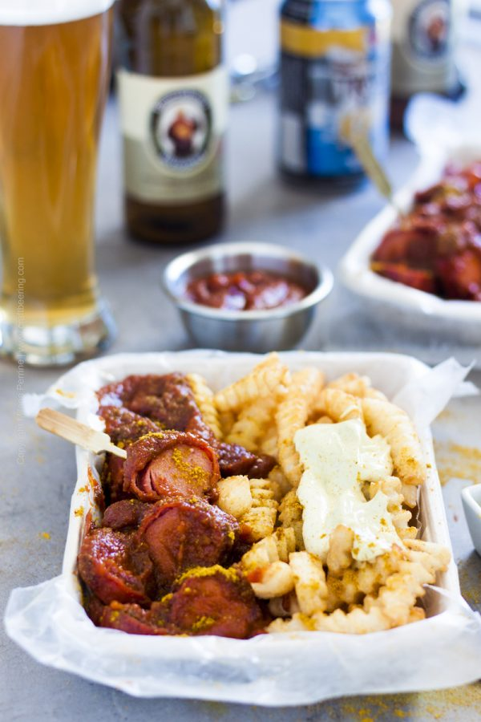

Currywurst

Description
A very iconic street food, Currywurst is one of the most popular dishes in Germany.
Bratwurst are smothered in a curry infused ketchup, then served with fries. How cool!
Ingredients
- 1 tablespoon vegetable oil
- 1 onion, diced
- 2 cloves garlic, minced
- 2 tablespoons yellow curry powder + more for dusting
- 1 cup organic ketchup
- 3 tablespoons white wine vinegar
- 1/2 cup dark brown sugar
- 2 teaspoons Worcestershire sauce
- 2 teaspoons paprika
- 2 teaspoons salt
- 1 teaspoon mustard powder
Instructions
- In a deep sauce pan heat the vegetable oil over medium heat and saute the diced onion for 4-5 minutes until soft and translucent.
- Lower the heat to medium-low, add the garlic and curry powder, stir and cook for another minute.
- Add the ketchup, stir and cook until it is heated through and gently simmers. Use a splatter guard to minimize mess from the simmering sauce.
- Add the vinegar, brown sugar, Worcestershire sauce, salt, paprika and mustard. Mix well and cook for a few more minutes until the sauce thickens.
- Remove from heat and use an immersion blender to blend all the ingredients. Alternatively transfer to a blender. The curry ketchup should be quite thick. Keep it warm while you cook the bratwurst.
- If the bratwurst in not pre-cooked first simmer it in water, then grill or pan-fry it.
- If grilling, grill until the skin gets crispy on all sides. If pan-frying heat about 1/4 inch deep of oil in a pan and turn the sausage frequently to make sure it gets crispy on all sides.
- Cut in thick bite-sized pieces and serve smothered with curry ketchup and a dusting of curry powder.